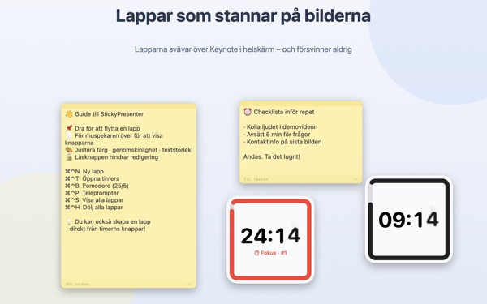
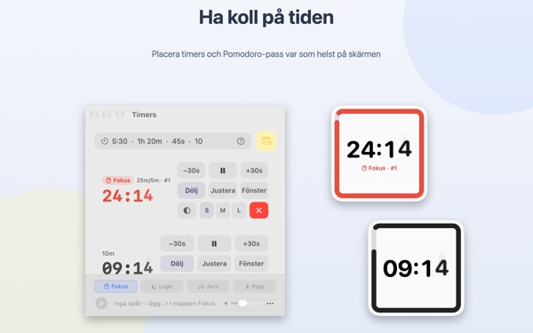
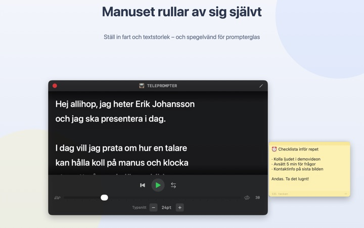
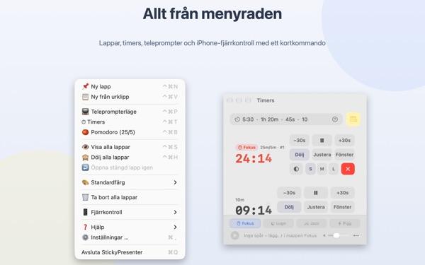

Manus och återstående tid
mitt på bilden
Sätt Keynote i helskärm så ligger lapparna och timern kvar ovanpå. De tar aldrig fokus från presentationsappen, så klickern bläddrar bilder precis som vanligt.
Alla funktioner är gratis. Kräver macOS 14 eller senare.

Testa på en bild
Skriv en tid som du skulle göra i appen. Tryck på 15s och se hur widgeten varnar när tiden håller på att ta slut.
Var har du manus och klocka när du presenterar?
Presentatörsvyn kräver en extra skärm, och en blick på armbandsuret märker publiken alltid. Kanske har du tejpat en papperslapp på datorn och sett den ramla av. StickyPresenter fäster manuset och den återstående tiden precis ovanför bilden, där blicken redan är.
En blick och du vet hur mycket tid som är kvar
En kvadratisk widget i hörnet visar återstående tid. Den blir röd när slutet närmar sig, och när tiden är ute hörs en signal och kanten blinkar.
Skriv tider hur du vill, till exempel 5:30 eller 1h 20m, eller 25/5 för en pomodoro som växlar mellan fokus och paus. Öppna timern i ett eget fönster för att bara dela det fönstret vid skärmdelning eller via AirPlay.

Läs manuset och titta in i kameran
Telepromptern rullar manuset i den takt du väljer och stannar av sig själv i slutet. Kopiera manuset, tryck på ⌘⌃P, så öppnas den med texten.
Det finns spegelläge för teleprompterutrustning med spegelglas, och takt och textstorlek finns kvar till nästa gång.

Du lämnar aldrig bilden
Appen körs diskret i menyraden, utan symbol i Dock och utan fönster att hålla koll på. Kortkommandon som ⌘⌃N för en ny lapp och ⌘⌃T för timers fungerar även i Keynote i helskärm.
På scenen kan du med den kostnadsfria iPhone-appen Remote Controller for Sticky starta och pausa timern och flytta widgeten om den skymmer en bild.

Kom igång i tre steg
- 1
Öppna appen
En lappsymbol dyker upp i menyraden, och första gången öppnas en kort guide.
- 2
Lägg till lapp och timer
Kopiera manuset och tryck på
⌘⌃V, skriv sedan längden på din dragning i timerfältet. - 3
Gå till helskärm
Lappen och timern ligger kvar överst.
Kortkommandon och tidsformat
- ⌘⌃N
- Ny lapp
- ⌘⌃V
- Ny lapp från urklipp
- ⌘⌃T
- Visa eller göm timers
- ⌘⌃B
- Starta en pomodoro (25 min fokus, 5 min paus)
- ⌘⌃P
- Teleprompter
- ⌘⌃S · ⌘⌃H
- Visa eller göm alla lappar
- 10
- Bara en siffra betyder minuter (10 min)
- 5:30 · 1:15:00
- Minuter:sekunder, timmar:minuter:sekunder
- 1h 20m · 45s
- Med enheter
- 25/5
- Fokus/paus om och om igen tills du stoppar
Alla kortkommandon använder Kommando (⌘) och Kontroll (⌃) tillsammans och fungerar även när du är i en annan app. Timers går upp till 99:59:59.
Vanliga frågor
Är det verkligen gratis?
Ja. Alla funktioner är gratis, och iPhone-appen Remote Controller for Sticky är en separat, kostnadsfri app. Om appen hjälper dig kan du ge utvecklaren dricks under Inställningar; det låser inte upp något.
Kan jag visa bara timern vid skärmdelning eller skärmdubblering?
Ja. Med knappen Fönster på timerns rad öppnar du den som ett vanligt fönster. Då syns den i fönsterlistan för skärmdelning och AirPlay, och du kan dela bara det.
Jag har gömt en timerwidget och hittar den inte.
Håll pekaren över timerns rad i timerfönstret så markeras widgetens plats med en streckad linje. Klicka på Justera för att hämta tillbaka den bredvid timerfönstret.
Jag stängde en lapp av misstag.
Med Öppna stängd lapp igen i menyraden får du tillbaka någon av de 20 senaste. Lappar sparas medan du skriver och hamnar på samma plats när appen öppnas igen.
Ett kortkommando fungerar inte.
Står det i guidens tabell som Används av ett annat program har en annan app lagt beslag på det först. Avsluta den appen så fungerar det igen. Ingen behörighet för hjälpmedel behövs.
Varför ber temat Kameleont om skärminspelning?
Kameleont läser av färgen på skärmen bakom widgeten och anpassar sig efter den, och det kräver den behörigheten. Inget sparas eller skickas. Utan den fungerar temana System, Ljust och Mörkt som vanligt.
Hur lägger jag till bakgrundsmusik?
Välj en stämning (Fokus, Lugn, Jazz eller Pigg) i musikfältet längst ned i timerfönstret så skapar appen en mapp för varje. Lägg dina egna låtar där så spelas de i ordning tillsammans med timern. Appen har ingen egen musik.
Fjärrkontrollen på iPhone hittar inte min Mac.
Kontrollera i tur och ordning: körs StickyPresenter på datorn (symbol i menyraden)? Är båda enheterna på samma wifi och inte på ett gästnätverk eller mobildata? Är Lokalt nätverk tillåtet under Integritet och säkerhet på både iPhone och Mac? Är VPN avstängt?
Fjärrkontrollen säger att ihopparningskoden är fel.
Ange den fyrsiffriga kod som just nu visas under Fjärrkontroll i Macens menyrad. Har du klickat på Ny ihopparningskod gäller bara den nya. Efter första ihopparningen ansluter den så fort du öppnar appen.
Kan någon annan styra min timer?
Inte utan din kod. Datorn tar bara emot fjärrkontroller som har angett rätt kod, via en krypterad direktanslutning i det lokala nätverket. Har någon sett koden, välj Ny ihopparningskod eller Glöm ihopparade fjärrkontroller under Fjärrkontroll i menyraden.
Var sparas mina lappar och manus?
Bara på den här datorn. Inget konto, ingen reklam, och inget skickas ut på nätet förutom anonym användningsstatistik och feedback som du själv väljer att skicka.
Frågor, buggar eller idéer? Skriv till mizzking75@gmail.com.